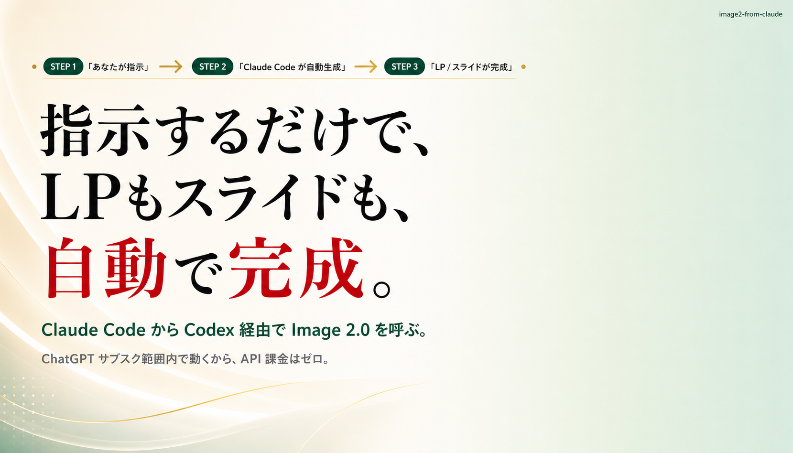
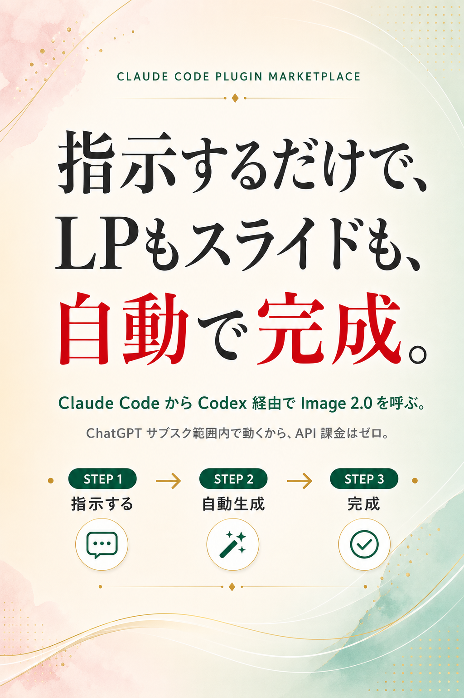

Claude Code に話しかけるか、スラッシュコマンドを打つだけ。
あとはヒアリング → 自動生成 → 引き取り、まで自動で進みます。
スラッシュコマンドの後にざっくり一言で OK。 参考デザインのパスや CTA 文言など、必要なら追加情報も一文で渡せる。
Claude Code が Codex MCP を呼び、Image 2.0 でスライス画像を生成。 HTML / CSS の組み立てまで全自動で進む。
lp-out/<slug>/ または slides-out/<slug>/ に画像と HTML が一式保存。
そのままブラウザで開けば成果物が確認できる。
brew install openai/tap/codex
実際に lp-from-codex / slides-from-codex で生成した成果物。
クリックでポップアップ表示・スクロール可能
Claude Code を起動して、以下のコマンドを順に実行してください。
その後「LP作って」「スライド作って」と話しかけるとスキルが起動します。
/plugin marketplace add sammyTI/image2-from-claude
/plugin install lp-from-codex@image2-from-claude /plugin install slides-from-codex@image2-from-claude
/reload-plugins
/plugin marketplace add https://github.com/sammyTI/image2-from-claude.git
brew install openai/tap/codex codex login
このキットは ChatGPT サブスク内で動きますが、生成のたびに Codex の使用枠を消費します。
無料ではなく「サブスクの枠を使う」点にご注意ください。1回の生成で大きく枠を使うこともあるので、Plus より Pro 推奨です。
スラッシュコマンドの後に、ざっくり一言添えるだけで起動します。
足りない情報は Claude Code が必要なぶんだけヒアリングして埋めてくれます。
/lp-from-codex 化粧品LP作って/lp-from-codex 化粧品ブランドのトライアル申込LP、参考デザインは ~/Downloads/ref.png、CTA は「無料サンプル請求」、出力先は lp-out/skincare-trial/
/slides-from-codex 販売店向けピッチデッキ10枚、ブランド名AYUNE、配色ベージュ+ゴールド、出力先は slides-out/ayune-pitch/
/slides-from-codex Instagram広告バナー、解像度1080×1080、健康食品の訴求、CTA「LINE登録で初回半額」、出力先は slides-out/health-banner/
/slides-from-codex Xカルーセル5枚、テーマ「フリーランスが最初の1万円を稼ぐ流れ」、解像度1200×675、引きフック→ステップ4枚→保存CTA
mcp__codex__codex が見えない | Claude Code を再起動。.mcp.json の codex エントリを確認。 |
| 画像生成で API 課金が走る | codex login で ChatGPT アカウントを選び直す。 |
| Image 2.0 がレートリミット | サブスク枠の上限。少し時間を置く。 |
| 生成画像が 30〜100KB しかない | HTML フォールバック疑い。本ツールは1枚目のサイズゲートで自動検知して再投します。 |